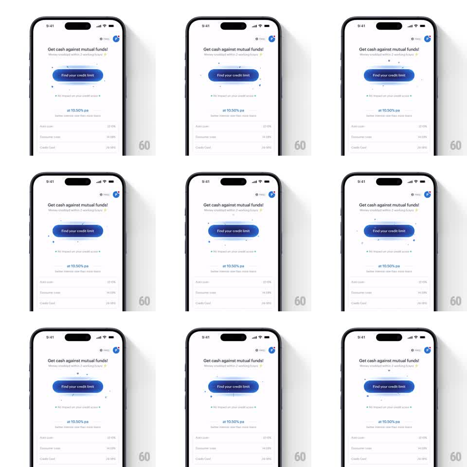

Media
Frame-by-frame

Rebuild this animation 1:1: smallcase's credit-limit black hole - an idle effect where tiny particles drift inward toward the "Find your credit limit" button and a glow pulses behind it, pulling the eye to the primary action.

Rebuild this animation 1:1: smallcase's credit-limit black hole - an idle effect where tiny particles drift inward toward the "Find your credit limit" button and a glow pulses behind it, pulling the eye to the primary action.
## Integration
Integration: stack-agnostic spec - springs given as stiffness/damping, timed motions as duration + curve; map every value to your framework and animation library of choice.
## Scene
White screen: a greeting row (avatar, help) top-right, headline "Get cash against mutual funds!" with the subline "Money credited within 2 working days", then the blue pill "Find your credit limit". Below: "No impact on your credit score" with a sparkle, "at 10.50% pa" in blue, and a comparison list (Auto Loan, Consumer Loan, Credit Card with rates).
## Motion spec
Pattern: gravitational idle pull on a primary button.
- Small particles (2-4pt, blue and dark gray) spawn in a wide ring around the button and drift inward on curved paths (accelerating slightly as they approach, 1.2-2s per journey), shrinking and fading as they are absorbed at the button's edge.
- A soft radial glow behind the button pulses (scale 1 -> 1.15, opacity 0.25 -> 0.4, 2.4s loop, ease-in-out) - the button itself never scales.
- A thin elliptical ring occasionally sweeps around the button (like an orbit, 4s period, 30% opacity).
- On touch-down the pull inverts: particles burst outward (300ms) and the button presses (scale 0.96, spring back ~340/14).
## Calibration
- Subtlety first: at most ~12 particles alive at once; the screen stays a clean white finance page.
- Particles must vanish INTO the button's edge, not onto its label.
## Reduced motion
Static button with a faint constant glow.
## Don't miss
- The button copy ("Find your credit limit") stays perfectly legible - the effect lives around it, not on it.
- The comparison list below is fully static; the animation never touches it.